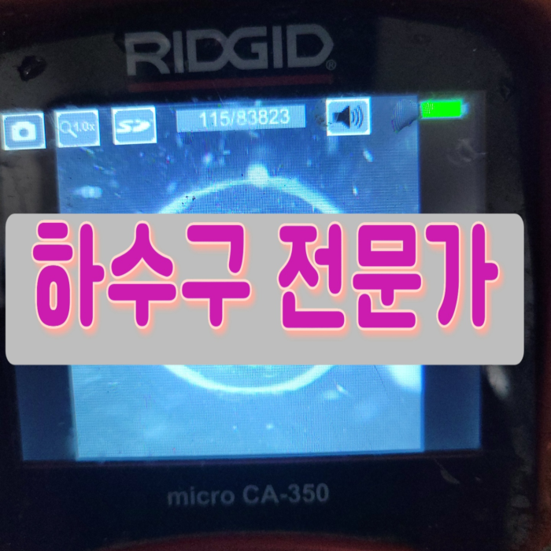
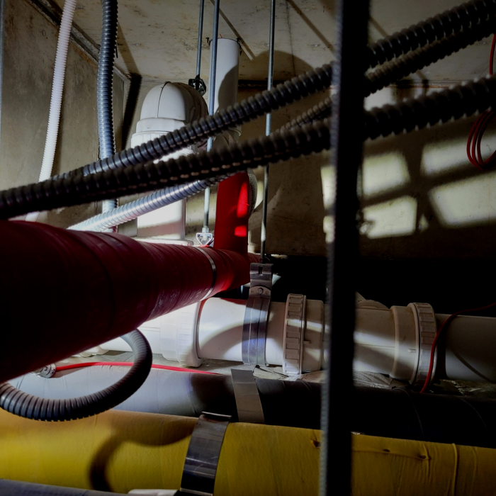
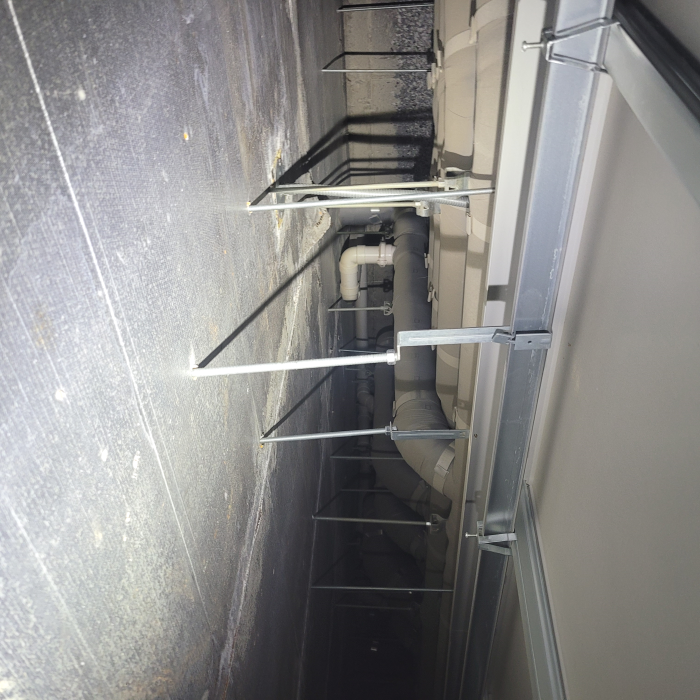
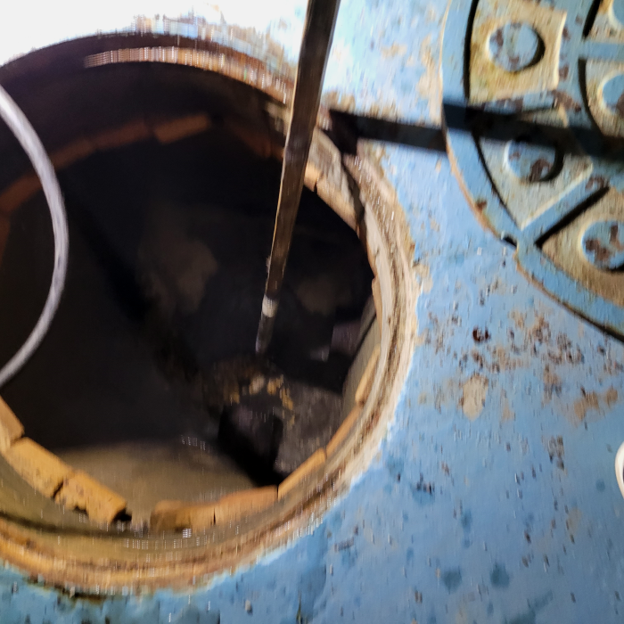
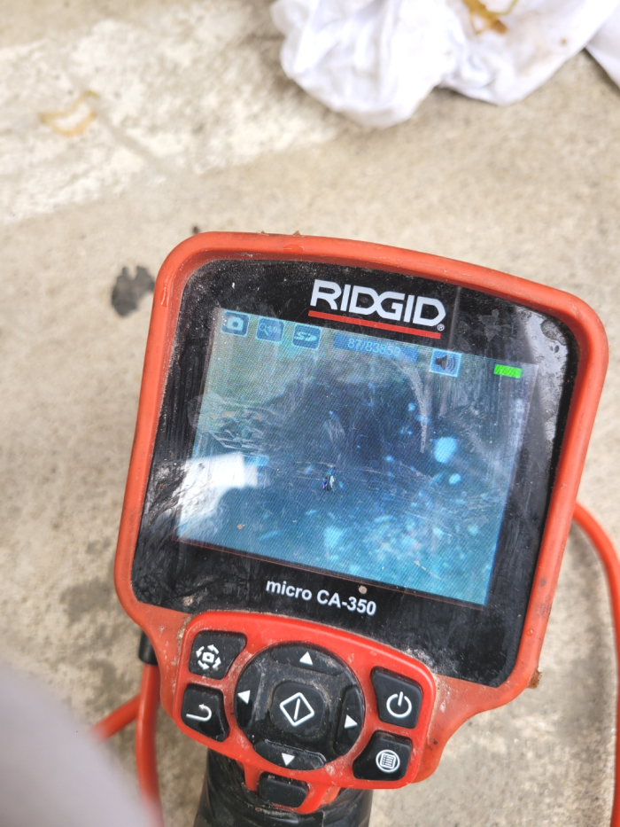
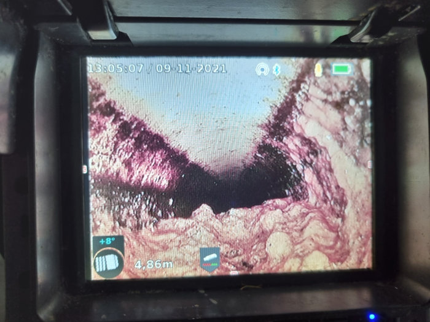
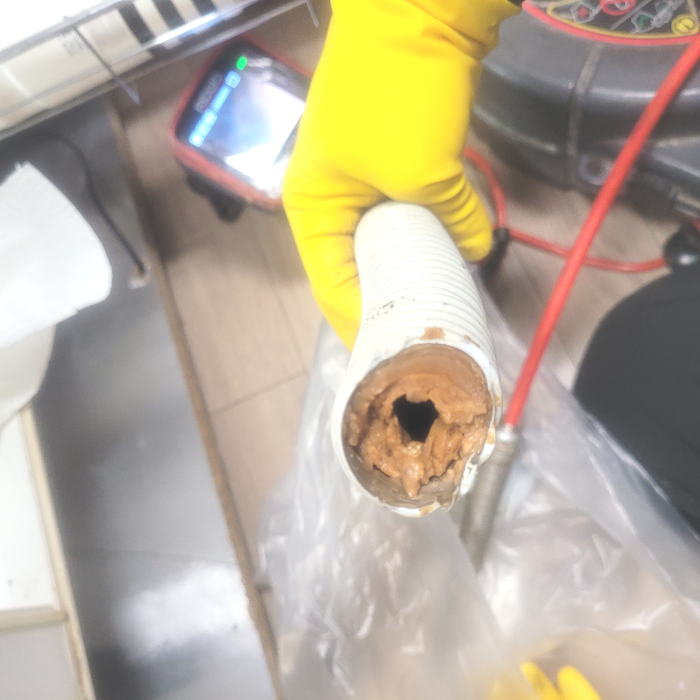

🏠 천안 성거읍 배수관막힘 직산읍 배수구역류 하수구뚫는업체
천안 성거읍 싱크대막힘 전문 시공 후기

📋 작업 개요
- 위치: 천안 성거읍, 성거읍, 천안
- 서비스 유형: 싱크대막힘, 변기막힘, 하수구막힘, 배관막힘, 역류해결, 뚫는업체, 배관청소, 고압세척
- 작업 일시: 2024. 1. 29. 13:16
- 업체명: 하수구수사대 (010-5615-2118)
🔍 문제 상황
반갑습니다!
설비전문업체 "하수구수사대"를 찾아주셔서 고맙습니다^^
고객님은 메인과 작업이 가능한 전문설비업체를 찾아보셨다고 하는데요. 저희는 그런 배수업체이면서 최신 전문 장비도 보유하고 오랜 경력으로 노하우와 실력이 보장되어 있어서 더 믿음이 갔다고 해요. 그렇다면 저희를 믿어주신 만큼 결과로 보답해 드려야겠지요?
천안 성거읍 배수관막힘 직산읍 배수구역류 하수구뚫는업체

🔎 원인 분석
💡 전문가 진단: 천안 성거읍 배수관막힘 직산읍 배수구역류 하수구뚫는업체
만약에 작업을 했는데 하수관완벽하게 통수가 안되었을 경우 생활하다보면 또 똑같은 현상이 발생하여 스트레스를 받게 되고 그때서야 추가작업을 의뢰해도 거절하는 곳이 많기 때문에 한번 할때 제대로된 업체에 의뢰하여 확실하게 하는것이 좋아요.
안쪽 하수의 어느부분에 오염이집중되었는지 우선적으로 진단해야합니다. 이런과정들을 누락시키게되면 앞서서 말씀드린내용과같이 어떠한이유로하수 배관막힘이 일어나게되는지 알아내질못하는겁니다.좁은공간을 시공하는것은 여간힘든작업이 아닐수없는데요.
평상시 문제없이 잘 사용하다가 별다른 증상 없이 배출이 안되고하수 역류까지 된다면 아마도 이는 갑자기 발생한 일이 아닙니다. 오랜 시간 각종 이물질들이 누적되어 이제서 발생했을 뿐이란 이야기입니다.
어떤 하수관 업체든지 내시경을 갖춘 곳을 이용하셔야 하는 가장 큰 이유랍니다. 관리사무소 같은 곳에서는 이런 기계 없이 도와주시기 때문에 정확하게 막힌 지점을 뚫어낼 수가 없어서 수일 안에 다시 막혀버리는 것입니다.
급한 마음에 전문 설비업체를 찾아볼 시간도 없이 집 근처 설비가게를 찾아 대충 배수구뚫어내면 얼마 안 되어 다시 막히고 또 출장비를 지불하고 뚫어내는 손해를 보시게 될 수도 있습니다.

🔧 작업 과정
주로 고가의 배수장비들을 종류별로 가지고 있는 업체가 많지 않습니다. 그에 따라 상황에 맞춰 유연하게 대처할 수 있는 장비들을 활용하여 해결할 수 있는 방안을 마련해드리고 있습니다.
당시에는 통수가 확보되어 배수관물을 다시 사용할 수 있었지만 채 1달이 지나기도 전에 또 다시 유속이 느려지고 막히는 듯한 느낌이 드셨다고 하셨습니다. 주변 지인들에게 수소문을 하던 중 전문 최신장비를 적절하게 사용하면서 문제를 완벽하게 해결해 주는 저희를 소개받으셨다고 합니다. 한 번 작업을 받기 이전에는 물이 잘 빠지지 않더라도 마트에서 세제를 구입해와서 부어주는 것만으로도 충분히 문제가 해결되었을 것입니다.
하수 막힘 해결을 위해선 무슨장비가 필요할지정확히알수없어 전반적인수리에 악영향을끼치지않도록 빠짐없이 가지고있어야된답니다 가령고객님들이 전문가를선별하는과정에서 작은부분도 소홀히하지않으시면 내집의 귀중한하수관을 깨끗하게만들수있어요!
배관원인은 상당히많기때문에 대처법들을 숙지하고있기는 어려운게 현실이죠.셀프시도는 옳지않기에 생각을다르게 해주시는게좋아요.실력자분들에게 문의해보시는게 가장빠르답니다.그러하나 찾아보더라도 수없이많은 업체들로인해 의뢰하려하더라도 어떤곳을 택해야되는지 어려우실겁니다
배관막힘증상이 발생했다면 실력자에게 연락하시는게 좋은방법이에요. 그렇지만 보통은 거의 모든분들께서 각양각색의 배관회사들중 정직한곳이 어디인지 알수는없습니다.배관막힘 업체를 선정할땐 여러가지를 살펴봐야합니다.
이제부터는 베테랑에게 의뢰해야합니다.경력이많은 경력자에게 의뢰를하셔야지만 소비를 덜할수있고 현재까지의 증상들을 무사히배출관 뚫을수있습니다
어떤 하수 작업에서든 시원찮은 장비가아니라 배수관전체 고착화된것들을 긁어내주는 플렉스샤프트와 고압등으로 맡기실때도 군더더기없게 만들고있습니다. 이런부분들은 경력이있기에 모든과정에서 깔끔할수있는거죠. 하수배관에 남아있는것 없이 싹 뚫게된다면 석회들이 뭉치는데까지 훨씬긴시간이 걸리게되어 재발생의 가능성도 적습니다.
고압세척기가 열심히 파쇄한 찌꺼기들부터 빠르게 밖으로 걷어내고 내시경 카메라로 배출구내부를 다시 한번 살펴봅니다. 참고로 이물질 제거에는 펌프와 석션기가 동원되었는데 덕분에 내시경 시야도 충분히 확보되었습니다.


✅ 작업 완료
저희는 1년 365일 배관 청소를 진행하고 있기 때문에 혹시나 평일, 주말 언제라도 배수 배관에 문제가 생겼을 경우 전화 한 통 주시면 달려가 해결해 드리고 기본적인 비용 안내에 대해서는 유선으로 문의해 보세요!
#하수구막힘 #하수구뚫음 #하수구역류 #씽크대막힘 #싱크대역류 #오수관막힘 #하수구청소 #욕실하수구막힘 #변기막힘 #하수구뚫는비용 #싱크대수리 #화장실막힘




⚠️ 주방 싱크대 배관 막힘 예방 수칙
- ✅ 기름기가 묻은 식기나 프라이팬은 설거지 전 키친타올로 반드시 기름때를 닦아내세요.
- ✅ 주기적으로 싱크대 개수대에 뜨거운 물을 가득 받아 한 번에 내려 배관 내부 기름을 씻어내세요.
- ✅ 배수구 거름망을 미세한 필터로 사용하시고 음식물 찌꺼기가 틈으로 새어 들지 않게 관리하세요.
- ✅ 베이킹소다와 식초를 뜨거운 물과 함께 일주일에 한 번씩 부어주면 배관 살균과 막힘 예방에 좋습니다.
💡 핵심 정리
- 확실한 장비 작업(내시경 점검 및 샤프트 스케일링)으로 원인을 뿌리 뽑습니다.
- 작업 후 1년 이내에 동일한 부위 재발 시 100% 무상 A/S 서비스를 보장합니다.
- 서울 · 경기 · 인천 전 지역에 24시간 언제든 긴급 출동할 수 있도록 항시 대기 중입니다.
❓ 자주 묻는 질문 (FAQ)
🚨 천안 성거읍 싱크대막힘 문제로 고민이신가요?
정확한 원인 진단과 확실한 시공으로 재발 없는 해결을 약속드립니다.
24시간 긴급 출동 | 서울 · 경기 · 인천 전지역 | 1년 내 재발 시 무상 A/S